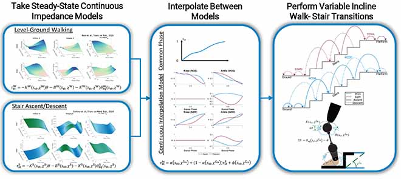

Continuous Impedance Transition for Walk–Stair Prosthesis Control (TNSRE 2026)
Research
IEEE T-NSRE 2026
Impedance Control
Powered Prosthesis
Phase-Variable Control
Walk–Stair Transition

This work extends prior continuous transition work from swing-phase kinematics to stance-phase impedance control. Rather than discretely switching between walking and stair controllers, the system continuously blends joint impedance across the stance phase during walk–stair transitions, producing more natural knee and ankle torque, improved compliance, and better load support for a powered knee–ankle prosthesis.
What I built
- Continuous stance impedance transition model that blends walking and stair impedance behavior across the stance phase, replacing discrete controller hand-offs with a smoothly varying profile.
- Phase-variable control framework that synchronizes prosthesis impedance with the user's real-time movement phase, enabling natural, gait-consistent assistance throughout the transition.
- Comparison against discrete switching strategies, demonstrating smoother and more biomimetic transition kinetics in terms of joint torque, compliance, and support profile.
- Pilot validation with transfemoral amputee participants across walk–stair transitions at two stair inclines, confirming feasibility and biomechanical benefit in real-world conditions.
Why it matters
- Stair transitions are among the hardest daily mobility challenges for prosthesis users — abrupt controller switching creates unnatural torque and instability exactly when support matters most.
- Continuous impedance blending replaces brittle mode switching with a user-synchronized profile that respects the biomechanics of loaded stance, closing the gap between prosthesis behavior and intact-limb dynamics.
- Pilot human subject results validate smoother kinetics and improved transition quality across inclines, moving powered prostheses closer to seamless real-world locomotion.
Skills highlighted
Phase-variable control
Hybrid kinematic impedance control
Powered prosthesis control
Biomechanics-informed modeling
Human subject experiments
Kinematic and kinetic validation
Continuous control blending
Real-time prosthesis implementation
Ph.D. research conducted in the LocoLab at the University of Michigan, advised by Prof. Robert D. Gregg.